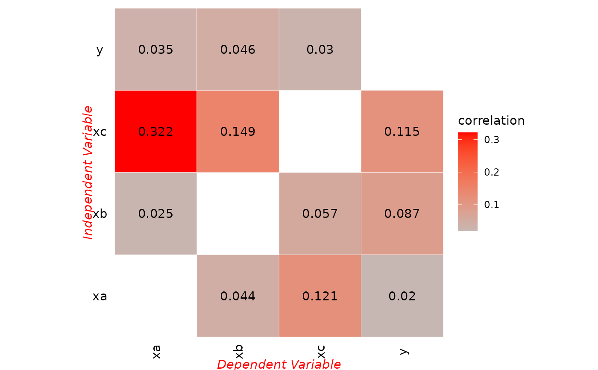

spatial pattern correlation
Usage
spc(
data,
overlay = "and",
discnum = 3:8,
discmethod = c("sd", "equal", "geometric", "quantile", "natural"),
cores = 1
)Arguments
- data
A
data.frame,tibbleorsfobject of observation data.- overlay
(optional) Spatial overlay method. One of
and,or,intersection. Default isand.- discnum
(optional) A vector of number of classes for discretization. Default is
3:8.- discmethod
(optional) A vector of methods for discretization, default is using
c("sd","equal","geometric","quantile","natural")by invokingsdsfun.- cores
(optional) Positive integer (default is 1). When cores are greater than 1, use parallel computing.
Value
A list.
cor_tblA tibble with power of spatial pattern correlation
cor_matA matrix with power of spatial pattern correlation
Examples
sim1 = sf::st_as_sf(gdverse::sim,coords = c('lo','la'))
sim1
#> Simple feature collection with 80 features and 4 fields
#> Geometry type: POINT
#> Dimension: XY
#> Bounding box: xmin: 1 ymin: 1 xmax: 10 ymax: 8
#> CRS: NA
#> # A tibble: 80 × 5
#> y xa xb xc geometry
#> <dbl> <dbl> <dbl> <dbl> <POINT>
#> 1 0.23 1.96 4.17 4.82 (1 1)
#> 2 0.34 10.7 3.83 7.41 (2 1)
#> 3 0.32 3.08 4.23 5.25 (3 1)
#> 4 0.25 2.67 3.02 3.91 (4 1)
#> 5 0.49 9.05 3.65 6.67 (5 1)
#> 6 0.7 4.93 4.16 5.80 (6 1)
#> 7 0.8 9.99 3.86 7.19 (7 1)
#> 8 0.84 2.60 2.56 3.43 (8 1)
#> 9 0.78 8.23 2.99 5.74 (9 1)
#> 10 0.65 14.8 2.03 6.97 (10 1)
#> # ℹ 70 more rows
# \donttest{
g = spc(sim1, discnum = 3:6, cores = 1)
g
#> *** Spatial Pattern Correlation
#>
#> | xv | yv | correlation |
#> |:--:|:--:|:-----------:|
#> | xc | y | 0.11456 |
#> | xb | y | 0.08727 |
#> | xa | y | 0.02027 |
#> | xc | xa | 0.32194 |
#> | y | xa | 0.03498 |
#> | xb | xa | 0.02510 |
#> | xc | xb | 0.14924 |
#> | y | xb | 0.04607 |
#> | xa | xb | 0.04362 |
#> | xa | xc | 0.12067 |
#> | xb | xc | 0.05717 |
#> | y | xc | 0.02997 |
plot(g,"matrix")

# }